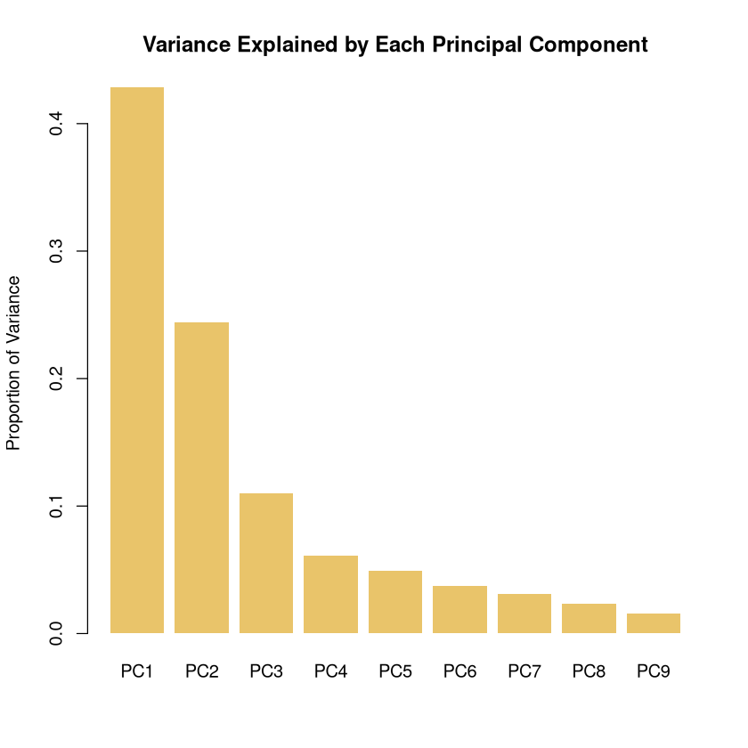
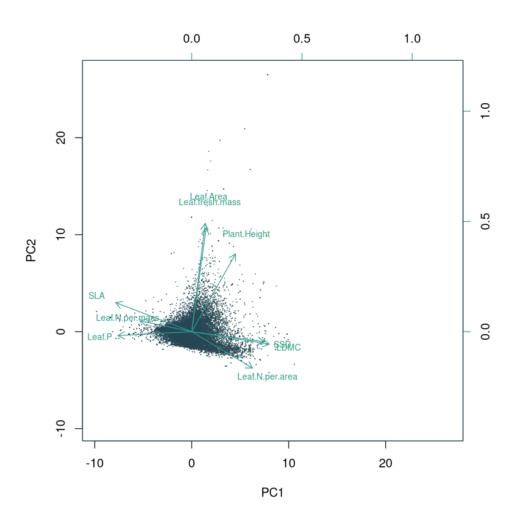
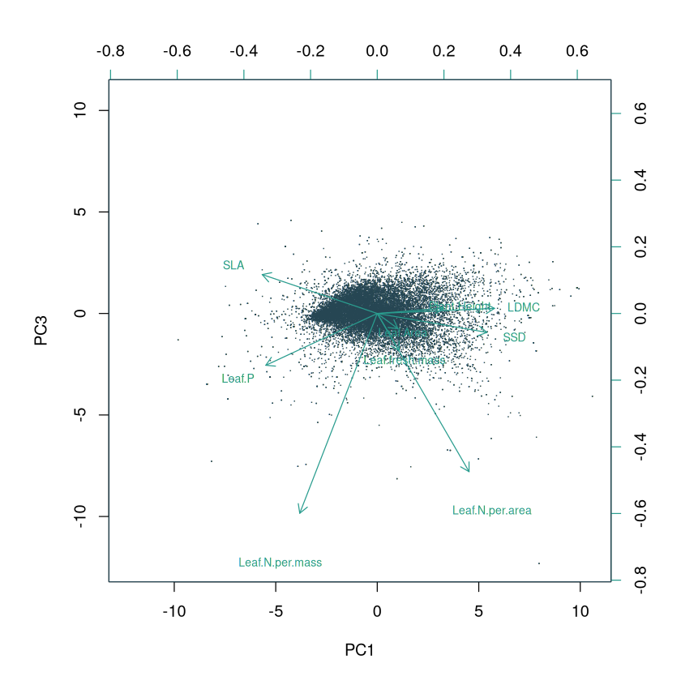
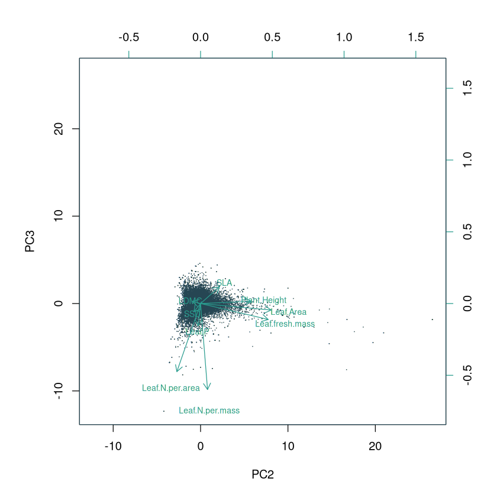

Global Spectrum of Plant Form and Function
Contents
# ignore this
.libPaths(c("/net/home/swolf/R/x86_64-pc-linux-gnu-library/4.4", .libPaths()))
Global Spectrum of Plant Form and Function#
References#
Diaz et al., 2016, Global Spectrum of Plant Form and Function
Weigelt et al. 2021, An integrated framework of plant form and function: the belowground perspective
Wolf et al. 2022, Citizen science plant observations encode global trait patterns
Exercise Outline#
Correlate sPlotOpen data with trait grid cell averages
Calculate PCA with top traits from correlation analysis (come up with a good cut-off)
Plot variance explained
Plot biplots with loadings
Create global maps for the PCs that explain most variance
Try to interpret PCs in ecological terms
Describe what regions are not well covered and discuss how this may influence the PCA
Choose a biome and quantify and visualitze trait shifts from native -> all (group)
Quantify and visualize trait shifts in a specific biome
Data#
Grid-cell averages:
/net/scratch/swolf/GBIF/gbif_CS_glonaf_wcvp_res3_try6_mean_imp.csvh3_res3: h3 hexagonal equal-area grid cells at reolution 3
group: only indigenous observations (native) and indigenous+non-indigenous observations
count: number of occurences per grid cell (sampling density)
37 above- and below-ground plant functional traits (citizen-science species occurrence merged with TRY trait data), gap-filled
sPlotOpen:
~/iNaturalist/Data/sPlotOpen/cwm_loc.csvPlotID
Latitude
Longitude
Community weighted means (CWM’s) for 18 above-ground traits
a bunch of other variables
Trait names:
~/Func_Neo_Phytes/Data/trait_info.csvWWF biomes shapefile:
~/iNaturalist/Data/WWF/wwf_terr_ecos.shp
Corrlate with sPlotOpen#
Calculate grid-cell sPlotOpen averages
# read ~/iNaturalist/Data/sPlotOpen/cwm_loc.csv
splotopen <- read.csv("~/iNaturalist/Data/sPlotOpen/cwm_loc.csv")
head(splotopen)
| PlotObservationID | TraitCoverage_cover | Species_richness | TraitCoverage_pa | Leaf.Area | SSD | SLA | Leaf.C | Leaf.N.per.mass | Leaf.P | ⋯ | Height_shrubs_lowest | Height_herbs_average | Height_herbs_lowest | Height_herbs_highest | SoilClim_PC1 | SoilClim_PC2 | Resample_1 | Resample_2 | Resample_3 | Resample_1_consensus | |
|---|---|---|---|---|---|---|---|---|---|---|---|---|---|---|---|---|---|---|---|---|---|
| <int> | <dbl> | <int> | <dbl> | <dbl> | <dbl> | <dbl> | <dbl> | <dbl> | <dbl> | ⋯ | <dbl> | <dbl> | <dbl> | <dbl> | <dbl> | <dbl> | <chr> | <chr> | <chr> | <chr> | |
| 1 | 16 | 0.27777778 | 3 | 0.3333333 | 3.678311 | -1.0472931 | 2.890748 | 6.128157 | 2.873263 | 1.1140362 | ⋯ | NA | NA | NA | NA | -3.66 | 0.546 | True | False | False | True |
| 2 | 17 | 0.03846154 | 2 | 0.5000000 | 3.678311 | -1.0472931 | 2.890748 | 6.128157 | 2.873263 | 1.1140362 | ⋯ | NA | NA | NA | NA | -3.66 | 0.546 | True | False | False | True |
| 3 | 18 | 0.04761905 | 4 | 0.2500000 | 3.678311 | -1.0472931 | 2.890748 | 6.128157 | 2.873263 | 1.1140362 | ⋯ | NA | NA | NA | NA | -3.66 | 0.546 | False | False | True | False |
| 4 | 20 | 0.66666667 | 3 | 0.3333333 | 3.686063 | -0.9071351 | 2.903715 | 6.136791 | 2.929729 | 0.7391809 | ⋯ | NA | NA | NA | NA | -3.66 | 0.546 | False | True | False | False |
| 5 | 22 | 0.53846154 | 7 | 0.5714286 | 3.899842 | -0.9005136 | 2.917708 | 6.131968 | 2.955072 | 0.7336978 | ⋯ | NA | NA | NA | NA | -3.66 | 0.546 | True | False | False | True |
| 6 | 23 | 0.95238095 | 13 | 0.8461538 | 4.225747 | -0.8226879 | 2.638385 | 6.158266 | 2.843045 | 0.2463386 | ⋯ | NA | NA | NA | NA | -3.66 | 0.546 | False | False | True | False |
# column names splotopen
names(splotopen)
- 'PlotObservationID'
- 'TraitCoverage_cover'
- 'Species_richness'
- 'TraitCoverage_pa'
- 'Leaf.Area'
- 'SSD'
- 'SLA'
- 'Leaf.C'
- 'Leaf.N.per.mass'
- 'Leaf.P'
- 'Plant.Height'
- 'Seed.mass'
- 'Seed.length'
- 'LDMC'
- 'Leaf.N.per.area'
- 'Leaf.N.P.ratio'
- 'Leaf.delta15N'
- 'Seeds.per.rep..unit'
- 'Leaf.fresh.mass'
- 'Stem.conduit.density'
- 'Dispersal.unit.length'
- 'Conduit.element.length'
- 'LeafArea_CWV'
- 'StemDens_CWV'
- 'SLA_CWV'
- 'LeafC_perdrymass_CWV'
- 'LeafN_CWV'
- 'LeafP_CWV'
- 'PlantHeight_CWV'
- 'SeedMass_CWV'
- 'Seed_length_CWV'
- 'LDMC_CWV'
- 'LeafNperArea_CWV'
- 'LeafNPratio_CWV'
- 'Leaf_delta_15N_CWV'
- 'Seed_num_rep_unit_CWV'
- 'Leaffreshmass_CWV'
- 'Stem_cond_dens_CWV'
- 'Disp_unit_leng_CWV'
- 'Wood_vessel_length_CWV'
- 'GIVD_ID'
- 'Dataset'
- 'Continent'
- 'Country'
- 'Biome'
- 'Date_of_recording'
- 'Latitude'
- 'Longitude'
- 'Location_uncertainty'
- 'Releve_area'
- 'Plant_recorded'
- 'Elevation'
- 'Aspect'
- 'Slope'
- 'is_forest'
- 'ESY'
- 'Naturalness'
- 'Forest'
- 'Shrubland'
- 'Grassland'
- 'Wetland'
- 'Sparse_vegetation'
- 'Cover_total'
- 'Cover_tree_layer'
- 'Cover_shrub_layer'
- 'Cover_herb_layer'
- 'Cover_moss_layer'
- 'Cover_lichen_layer'
- 'Cover_algae_layer'
- 'Cover_litter_layer'
- 'Cover_bare_rocks'
- 'Cover_cryptogams'
- 'Cover_bare_soil'
- 'Height_trees_highest'
- 'Height_trees_lowest'
- 'Height_shrubs_highest'
- 'Height_shrubs_lowest'
- 'Height_herbs_average'
- 'Height_herbs_lowest'
- 'Height_herbs_highest'
- 'SoilClim_PC1'
- 'SoilClim_PC2'
- 'Resample_1'
- 'Resample_2'
- 'Resample_3'
- 'Resample_1_consensus'
# add h3 hexagonal grid cell code at resolution 3
library(h3)
splotopen$h3_res3 <- geo_to_h3(cbind(splotopen$Latitude, splotopen$Longitude), res = 3)
head(splotopen)
| PlotObservationID | TraitCoverage_cover | Species_richness | TraitCoverage_pa | Leaf.Area | SSD | SLA | Leaf.C | Leaf.N.per.mass | Leaf.P | ⋯ | Height_herbs_average | Height_herbs_lowest | Height_herbs_highest | SoilClim_PC1 | SoilClim_PC2 | Resample_1 | Resample_2 | Resample_3 | Resample_1_consensus | h3_res3 | |
|---|---|---|---|---|---|---|---|---|---|---|---|---|---|---|---|---|---|---|---|---|---|
| <int> | <dbl> | <int> | <dbl> | <dbl> | <dbl> | <dbl> | <dbl> | <dbl> | <dbl> | ⋯ | <dbl> | <dbl> | <dbl> | <dbl> | <dbl> | <chr> | <chr> | <chr> | <chr> | <chr> | |
| 1 | 16 | 0.27777778 | 3 | 0.3333333 | 3.678311 | -1.0472931 | 2.890748 | 6.128157 | 2.873263 | 1.1140362 | ⋯ | NA | NA | NA | -3.66 | 0.546 | True | False | False | True | 830c0dfffffffff |
| 2 | 17 | 0.03846154 | 2 | 0.5000000 | 3.678311 | -1.0472931 | 2.890748 | 6.128157 | 2.873263 | 1.1140362 | ⋯ | NA | NA | NA | -3.66 | 0.546 | True | False | False | True | 830c0dfffffffff |
| 3 | 18 | 0.04761905 | 4 | 0.2500000 | 3.678311 | -1.0472931 | 2.890748 | 6.128157 | 2.873263 | 1.1140362 | ⋯ | NA | NA | NA | -3.66 | 0.546 | False | False | True | False | 830c0dfffffffff |
| 4 | 20 | 0.66666667 | 3 | 0.3333333 | 3.686063 | -0.9071351 | 2.903715 | 6.136791 | 2.929729 | 0.7391809 | ⋯ | NA | NA | NA | -3.66 | 0.546 | False | True | False | False | 830c0dfffffffff |
| 5 | 22 | 0.53846154 | 7 | 0.5714286 | 3.899842 | -0.9005136 | 2.917708 | 6.131968 | 2.955072 | 0.7336978 | ⋯ | NA | NA | NA | -3.66 | 0.546 | True | False | False | True | 830c0dfffffffff |
| 6 | 23 | 0.95238095 | 13 | 0.8461538 | 4.225747 | -0.8226879 | 2.638385 | 6.158266 | 2.843045 | 0.2463386 | ⋯ | NA | NA | NA | -3.66 | 0.546 | False | False | True | False | 830c0dfffffffff |
# grid cell averages ...
library(data.table)
fdf <- as.data.table(splotopen)
fdf <- fdf[, lapply(.SD, mean, na.rm = TRUE), by = .(h3_res3), .SDcols = 5:22]
head(fdf)
dim(fdf)
| h3_res3 | Leaf.Area | SSD | SLA | Leaf.C | Leaf.N.per.mass | Leaf.P | Plant.Height | Seed.mass | Seed.length | LDMC | Leaf.N.per.area | Leaf.N.P.ratio | Leaf.delta15N | Seeds.per.rep..unit | Leaf.fresh.mass | Stem.conduit.density | Dispersal.unit.length | Conduit.element.length |
|---|---|---|---|---|---|---|---|---|---|---|---|---|---|---|---|---|---|---|
| <chr> | <dbl> | <dbl> | <dbl> | <dbl> | <dbl> | <dbl> | <dbl> | <dbl> | <dbl> | <dbl> | <dbl> | <dbl> | <dbl> | <dbl> | <dbl> | <dbl> | <dbl> | <dbl> |
| 830c0dfffffffff | 5.286020 | -0.6767926 | 2.547086 | 6.175948 | 2.862541 | 0.4098426 | -1.39150810 | -1.16317760 | 0.6846575 | -1.0542035 | 0.4223804 | 2.470260 | 0.63209872 | 5.335786 | -2.783946 | 5.485476 | 0.7850149 | 6.240016 |
| 830d0dfffffffff | 5.198045 | -0.7471362 | 2.274660 | 6.164345 | 2.785955 | 0.3008645 | -1.81075782 | -0.84815693 | 0.7265356 | -0.9310762 | 0.6015856 | 2.432048 | 0.70711660 | 4.710749 | -2.724683 | 5.546541 | 0.7271709 | 6.240027 |
| 830d09fffffffff | 5.425017 | -0.8202089 | 2.430393 | 6.175138 | 2.878956 | 0.3947741 | -1.06276613 | -1.07742213 | 0.6837733 | -1.0281507 | 0.5362389 | 2.451325 | 0.41047794 | 5.227728 | -2.686133 | 5.571741 | 0.8647338 | 6.112316 |
| 830d1dfffffffff | 5.673696 | -0.9112180 | 2.405599 | 6.154917 | 2.860321 | 0.4054245 | -1.03344633 | -1.15282416 | 0.6101166 | -1.0286873 | 0.5366637 | 2.413937 | 0.54469992 | 5.707986 | -2.412464 | 5.617495 | 0.8157300 | 6.313104 |
| 830d0cfffffffff | 5.076076 | -0.6920378 | 2.411308 | 6.172855 | 2.816234 | 0.3726307 | -1.49165972 | -1.19423362 | 0.6092392 | -0.9692410 | 0.4870674 | 2.393390 | 0.65518950 | 5.497273 | -2.923317 | 5.330322 | 0.6881776 | 6.165346 |
| 830c34fffffffff | 6.224304 | -0.7900717 | 2.399637 | 6.146253 | 2.882490 | 0.4622680 | 0.06446531 | -0.07326834 | 0.9682199 | -1.1758056 | 0.5209463 | 2.368610 | 0.02107625 | 5.248281 | -1.824061 | 4.755991 | 1.2820929 | 5.946835 |
- 2021
- 19
Correlation sPlotOpen and community science-based grid cell averages for all traits
traits <- read.csv("~/Func_Neo_Phytes/Data/trait_info.csv")
traits
| TraitID | TraitID_TRY6 | TraitName | ShortName | sPlotOpenName | UnitName |
|---|---|---|---|---|---|
| <int> | <chr> | <chr> | <chr> | <chr> | <chr> |
| 4 | X.X4. | Stem specific density (SSD, stem dry mass per stem fresh volume) or wood density | SSD | SSD | g/cm3 |
| 6 | X.X6. | Root rooting depth | Rooting depth | m | |
| 13 | X.X13. | Leaf carbon (C) content per leaf dry mass | Leaf C | Leaf.C | mg/g |
| 14 | X.X14. | Leaf nitrogen (N) content per leaf dry mass | Leaf N | Leaf.N.per.mass | mg/g |
| 15 | X.X15. | Leaf phosphorus (P) content per leaf dry mass | Leaf P | Leaf.P | mg/g |
| 21 | X.X21. | Stem diameter | Stem diameter | m | |
| 26 | X.X26. | Seed dry mass | Seed dry mass | Seed.mass | mg |
| 27 | X.X27. | Seed length | Seed length | Seed.length | mm |
| 46 | X.X46. | Leaf thickness | Leaf thickness | mm | |
| 47 | X.X47. | Leaf dry mass per leaf fresh mass (leaf dry matter content, LDMC) | LDMC | LDMC | g/g |
| 50 | X.X50. | Leaf nitrogen (N) content per leaf area | Leaf N per area | Leaf.N.per.area | g m-2 |
| 55 | X.X55. | Leaf dry mass (single leaf) | Leaf dry mass | mg | |
| 78 | X.X78. | Leaf nitrogen (N) isotope signature (delta 15N) | Leaf delta 15N | Leaf.delta15N | per mill |
| 95 | X.X95. | Seed germination rate (germination efficiency) | Germination efficiency | % | |
| 138 | X.X138. | Seed number per reproduction unit | Seed number/rep. unit | Seeds.per.rep..unit | number |
| 144 | X.X144. | Leaf length | Leaf length | mm | |
| 145 | X.X145. | Leaf width | Leaf width | cm | |
| 146 | X.X146. | Leaf carbon/nitrogen (C/N) ratio | Leaf C/N ratio | g g-1 | |
| 163 | X.X163. | Leaf fresh mass | Leaf fresh mass | Leaf.fresh.mass | g |
| 169 | X.X169. | Stem conduit density (vessels and tracheids) | Stem conduit density | Stem.conduit.density | mm-2 |
| 223 | X.X223. | Species genotype: chromosome number | Chromosome number | n | |
| 224 | X.X224. | Species genotype: chromosome cDNA content | Chromosome cDNA content | pg | |
| 237 | X.X237. | Dispersal unit length | Dispersal unit length | Dispersal.unit.length | mm |
| 281 | X.X281. | Stem conduit diameter (vessels, tracheids) | Stem conduit diameter | micro m | |
| 282 | X.X282. | Wood vessel element length; stem conduit (vessel and tracheids) element length | Wood vessel element length | Conduit.element.length | micro m |
| 289 | X.X289. | Wood fiber lengths | Wood fiber lengths | micro m | |
| 297 | X.X297. | Wood rays per millimetre (wood ray density) | Wood ray density | 1/mm | |
| 351 | X.X351. | Seed number per dispersal unit | Seed number/disp. unit | number | |
| 614 | X.X614. | Fine root length per fine root dry mass (specific fine root length, SRL) | Specific fine root length | cm/g | |
| 1080 | X.X1080. | Root length per root dry mass (specific root length, SRL) | Specific root length | cm/g | |
| 3086 | X.X3086. | Leaf area per leaf dry mass (SLA or 1/LMA) petiole, rhachis and midrib excluded | SLA midrib excl. | mm2/mg | |
| 3106 | X.X3106. | Plant height vegetative | Plant height veg. | Plant.Height | m |
| 3107 | X.X3107. | Plant height generative | Plant height gen. | m | |
| 3108 | X.X3108. | Leaf area (in case of compound leaves: leaf, petiole excluded) | Leaf area 3108 | mm2 | |
| 3109 | X.X3109. | Leaf area (in case of compound leaves: leaflet, petiole excluded) | Leaf area 3109 | mm2 | |
| 3110 | X.X3110. | Leaf area (in case of compound leaves: leaf, petiole included) | Leaf area 3110 | mm2 | |
| 3111 | X.X3111. | Leaf area (in case of compound leaves: leaflet, petiole included) | Leaf area 3111 | mm2 | |
| 3112 | X.X3112. | Leaf area (in case of compound leaves: leaf, undefined if petiole in- or excluded) | Leaf area 3112 | mm2 | |
| 3113 | X.X3113. | Leaf area (in case of compound leaves: leaflet, undefined if petiole is in- or excluded) | Leaf area 3113 | mm2 | |
| 3114 | X.X3114. | Leaf area (in case of compound leaves undefined if leaf or leaflet, if petiole is in- or excluded) | Leaf area 3114 | Leaf.Area | mm2 |
| 3115 | X.X3115. | Leaf area per leaf dry mass (SLA or 1/LMA): petiole excluded | SLA petiole excl. | mm2/mg | |
| 3116 | X.X3116. | Leaf area per leaf dry mass (SLA or 1/LMA): petiole included | SLA petiole incl. | mm2/mg | |
| 3117 | X.X3117. | Leaf area per leaf dry mass (SLA or 1/LMA): undefined if petiole is in- or excluded | SLA petiole in- or excluded | SLA | mm2/mg |
| 3120 | X.X3120. | Leaf water content per leaf dry mass (not saturated) | Leaf water content not saturated | g(W)/g(DM) |
# load datatable package
library(data.table)
# read /net/scratch/swolf/GBIF/gbif_CS_glonaf_wcvp_res3_try6_mean_imp.csv
gbif <- fread("/net/scratch/swolf/GBIF/gbif_CS_glonaf_wcvp_res3_try6_mean_imp.csv")
head(gbif)
| h3_res3 | group | count | X.X3117. | X.X14. | X.X50. | X.X146. | X.X3120. | X.X224. | X.X297. | ⋯ | X.X223. | X.X237. | X.X614. | X.X351. | X.X6. | X.X95. | X.X138. | X.X1080. | X.X78. | X.X4. |
|---|---|---|---|---|---|---|---|---|---|---|---|---|---|---|---|---|---|---|---|---|
| <chr> | <chr> | <int> | <dbl> | <dbl> | <dbl> | <dbl> | <dbl> | <dbl> | <dbl> | ⋯ | <dbl> | <dbl> | <dbl> | <dbl> | <dbl> | <dbl> | <dbl> | <dbl> | <dbl> | <dbl> |
| 832830fffffffff | all | 534527 | 18.214 | 22.920 | 1.517 | 23.667 | 4.787 | 4.419 | 10.888 | ⋯ | 27.280 | 4.836 | 4681.834 | 1.231 | 0.601 | 89.707 | 1334.172 | 3946.738 | -0.386 | 0.442 |
| 832830fffffffff | native | 378645 | 16.342 | 21.572 | 1.552 | 25.367 | 4.365 | 4.558 | 10.751 | ⋯ | 27.200 | 5.368 | 4343.244 | 1.292 | 0.665 | 88.577 | 957.992 | 3313.235 | -0.861 | 0.471 |
| 832834fffffffff | all | 449715 | 17.946 | 22.496 | 1.543 | 24.300 | 4.618 | 3.993 | 11.110 | ⋯ | 27.261 | 4.910 | 4562.517 | 1.228 | 0.633 | 89.730 | 1493.841 | 3848.960 | -0.478 | 0.453 |
| 832834fffffffff | native | 334995 | 15.877 | 21.214 | 1.582 | 25.657 | 4.229 | 4.024 | 11.045 | ⋯ | 27.287 | 5.420 | 4273.462 | 1.282 | 0.739 | 88.691 | 953.885 | 3216.443 | -0.897 | 0.478 |
| 832831fffffffff | all | 64487 | 18.615 | 21.891 | 1.429 | 24.619 | 4.800 | 4.665 | 11.035 | ⋯ | 27.500 | 5.051 | 4777.817 | 1.224 | 0.630 | 89.313 | 1341.667 | 3642.961 | -0.634 | 0.442 |
| 832831fffffffff | native | 51697 | 17.566 | 20.829 | 1.440 | 26.203 | 4.583 | 4.882 | 10.949 | ⋯ | 27.537 | 5.512 | 4525.613 | 1.261 | 0.678 | 88.553 | 900.762 | 3129.122 | -1.049 | 0.460 |
# make dictionary (long → short)
trait_dict <- setNames(traits$sPlotOpenName, traits$TraitID_TRY6)
# rename
setnames(gbif,
old = intersect(names(gbif), names(trait_dict)),
new = trait_dict[intersect(names(gbif), names(trait_dict))])
head(gbif)
| h3_res3 | group | count | SLA | Leaf.N.per.mass | Leaf.N.per.area | .1 | .2 | .3 | ⋯ | Dispersal.unit.length | .1 | .2 | .3 | .4 | Seeds.per.rep..unit | .5 | Leaf.delta15N | SSD | ||
|---|---|---|---|---|---|---|---|---|---|---|---|---|---|---|---|---|---|---|---|---|
| <chr> | <chr> | <int> | <dbl> | <dbl> | <dbl> | <dbl> | <dbl> | <dbl> | <dbl> | ⋯ | <dbl> | <dbl> | <dbl> | <dbl> | <dbl> | <dbl> | <dbl> | <dbl> | <dbl> | <dbl> |
| 832830fffffffff | all | 534527 | 18.214 | 22.920 | 1.517 | 23.667 | 4.787 | 4.419 | 10.888 | ⋯ | 27.280 | 4.836 | 4681.834 | 1.231 | 0.601 | 89.707 | 1334.172 | 3946.738 | -0.386 | 0.442 |
| 832830fffffffff | native | 378645 | 16.342 | 21.572 | 1.552 | 25.367 | 4.365 | 4.558 | 10.751 | ⋯ | 27.200 | 5.368 | 4343.244 | 1.292 | 0.665 | 88.577 | 957.992 | 3313.235 | -0.861 | 0.471 |
| 832834fffffffff | all | 449715 | 17.946 | 22.496 | 1.543 | 24.300 | 4.618 | 3.993 | 11.110 | ⋯ | 27.261 | 4.910 | 4562.517 | 1.228 | 0.633 | 89.730 | 1493.841 | 3848.960 | -0.478 | 0.453 |
| 832834fffffffff | native | 334995 | 15.877 | 21.214 | 1.582 | 25.657 | 4.229 | 4.024 | 11.045 | ⋯ | 27.287 | 5.420 | 4273.462 | 1.282 | 0.739 | 88.691 | 953.885 | 3216.443 | -0.897 | 0.478 |
| 832831fffffffff | all | 64487 | 18.615 | 21.891 | 1.429 | 24.619 | 4.800 | 4.665 | 11.035 | ⋯ | 27.500 | 5.051 | 4777.817 | 1.224 | 0.630 | 89.313 | 1341.667 | 3642.961 | -0.634 | 0.442 |
| 832831fffffffff | native | 51697 | 17.566 | 20.829 | 1.440 | 26.203 | 4.583 | 4.882 | 10.949 | ⋯ | 27.537 | 5.512 | 4525.613 | 1.261 | 0.678 | 88.553 | 900.762 | 3129.122 | -1.049 | 0.460 |
intersect(names(fdf), names(gbif))
- 'h3_res3'
- 'Leaf.Area'
- 'SSD'
- 'SLA'
- 'Leaf.C'
- 'Leaf.N.per.mass'
- 'Leaf.P'
- 'Plant.Height'
- 'Seed.mass'
- 'Seed.length'
- 'LDMC'
- 'Leaf.N.per.area'
- 'Leaf.delta15N'
- 'Seeds.per.rep..unit'
- 'Leaf.fresh.mass'
- 'Stem.conduit.density'
- 'Dispersal.unit.length'
- 'Conduit.element.length'
# Find shared trait columns (excluding the grid)
shared_traits <- intersect(names(fdf), names(gbif))
shared_traits <- setdiff(shared_traits, "h3_res3") # remove grid ID
# Keep only the grid + shared traits
fdf_sub <- fdf[, .SD, .SDcols = c("h3_res3", shared_traits)]
gbif_sub <- gbif[, .SD, .SDcols = c("h3_res3", shared_traits)]
head(fdf_sub)
| h3_res3 | Leaf.Area | SSD | SLA | Leaf.C | Leaf.N.per.mass | Leaf.P | Plant.Height | Seed.mass | Seed.length | LDMC | Leaf.N.per.area | Leaf.delta15N | Seeds.per.rep..unit | Leaf.fresh.mass | Stem.conduit.density | Dispersal.unit.length | Conduit.element.length |
|---|---|---|---|---|---|---|---|---|---|---|---|---|---|---|---|---|---|
| <chr> | <dbl> | <dbl> | <dbl> | <dbl> | <dbl> | <dbl> | <dbl> | <dbl> | <dbl> | <dbl> | <dbl> | <dbl> | <dbl> | <dbl> | <dbl> | <dbl> | <dbl> |
| 830c0dfffffffff | 5.286020 | -0.6767926 | 2.547086 | 6.175948 | 2.862541 | 0.4098426 | -1.39150810 | -1.16317760 | 0.6846575 | -1.0542035 | 0.4223804 | 0.63209872 | 5.335786 | -2.783946 | 5.485476 | 0.7850149 | 6.240016 |
| 830d0dfffffffff | 5.198045 | -0.7471362 | 2.274660 | 6.164345 | 2.785955 | 0.3008645 | -1.81075782 | -0.84815693 | 0.7265356 | -0.9310762 | 0.6015856 | 0.70711660 | 4.710749 | -2.724683 | 5.546541 | 0.7271709 | 6.240027 |
| 830d09fffffffff | 5.425017 | -0.8202089 | 2.430393 | 6.175138 | 2.878956 | 0.3947741 | -1.06276613 | -1.07742213 | 0.6837733 | -1.0281507 | 0.5362389 | 0.41047794 | 5.227728 | -2.686133 | 5.571741 | 0.8647338 | 6.112316 |
| 830d1dfffffffff | 5.673696 | -0.9112180 | 2.405599 | 6.154917 | 2.860321 | 0.4054245 | -1.03344633 | -1.15282416 | 0.6101166 | -1.0286873 | 0.5366637 | 0.54469992 | 5.707986 | -2.412464 | 5.617495 | 0.8157300 | 6.313104 |
| 830d0cfffffffff | 5.076076 | -0.6920378 | 2.411308 | 6.172855 | 2.816234 | 0.3726307 | -1.49165972 | -1.19423362 | 0.6092392 | -0.9692410 | 0.4870674 | 0.65518950 | 5.497273 | -2.923317 | 5.330322 | 0.6881776 | 6.165346 |
| 830c34fffffffff | 6.224304 | -0.7900717 | 2.399637 | 6.146253 | 2.882490 | 0.4622680 | 0.06446531 | -0.07326834 | 0.9682199 | -1.1758056 | 0.5209463 | 0.02107625 | 5.248281 | -1.824061 | 4.755991 | 1.2820929 | 5.946835 |
# put fdf_sub in expotential space , becuase the data was log-transformed before
fdf_sub[, (shared_traits) := lapply(.SD, function(x) exp(x)), .SDcols = shared_traits]
head(fdf_sub)
| h3_res3 | Leaf.Area | SSD | SLA | Leaf.C | Leaf.N.per.mass | Leaf.P | Plant.Height | Seed.mass | Seed.length | LDMC | Leaf.N.per.area | Leaf.delta15N | Seeds.per.rep..unit | Leaf.fresh.mass | Stem.conduit.density | Dispersal.unit.length | Conduit.element.length |
|---|---|---|---|---|---|---|---|---|---|---|---|---|---|---|---|---|---|
| <chr> | <dbl> | <dbl> | <dbl> | <dbl> | <dbl> | <dbl> | <dbl> | <dbl> | <dbl> | <dbl> | <dbl> | <dbl> | <dbl> | <dbl> | <dbl> | <dbl> | <dbl> |
| 830c0dfffffffff | 197.5555 | 0.5082445 | 12.76983 | 481.0390 | 17.50595 | 1.506581 | 0.2487000 | 0.3124916 | 1.983092 | 0.3484699 | 1.525589 | 1.881555 | 207.6359 | 0.06179418 | 241.1637 | 2.192440 | 512.8665 |
| 830d0dfffffffff | 180.9182 | 0.4737212 | 9.72461 | 475.4896 | 16.21530 | 1.351026 | 0.1635302 | 0.4282034 | 2.067904 | 0.3941293 | 1.825010 | 2.028135 | 111.1354 | 0.06556700 | 256.3494 | 2.069218 | 512.8726 |
| 830d09fffffffff | 227.0153 | 0.4403397 | 11.36335 | 480.6495 | 17.79569 | 1.484049 | 0.3454988 | 0.3404721 | 1.981340 | 0.3576678 | 1.709565 | 1.507538 | 186.3688 | 0.06814395 | 262.8915 | 2.374374 | 451.3828 |
| 830d1dfffffffff | 291.1084 | 0.4020342 | 11.08507 | 471.0277 | 17.46713 | 1.499939 | 0.3557787 | 0.3157438 | 1.840646 | 0.3574759 | 1.710291 | 1.724091 | 301.2637 | 0.08959428 | 275.1991 | 2.260825 | 551.7547 |
| 830d0cfffffffff | 160.1444 | 0.5005550 | 11.14853 | 479.5531 | 16.71380 | 1.451548 | 0.2249989 | 0.3029360 | 1.839032 | 0.3793709 | 1.627536 | 1.925507 | 244.0255 | 0.05375507 | 206.5045 | 1.990085 | 475.9657 |
| 830c34fffffffff | 504.8713 | 0.4538122 | 11.01918 | 466.9646 | 17.85869 | 1.587671 | 1.0665886 | 0.9293514 | 2.633253 | 0.3085703 | 1.683620 | 1.021300 | 190.2389 | 0.16136905 | 116.2789 | 3.604175 | 382.5406 |
#### Plot
# Required libraries
library(ggplot2)
library(reshape2)
# Trait names
trait_names <- c('Dispersal unit len.', 'Leaf Area', 'SLA', 'Leaf C', 'LDMC',
'Leaf fresh mass', 'Leaf N per area', 'Leaf N per mass',
'Leaf delta15N', 'Leaf N P ratio', 'Leaf P', 'Plant Height',
'Seed mass', 'Seed length', 'Seeds per rep. unit',
'Stem conduit \ndensity', 'SSD', 'Conduit element len.')
# Data preparation
data_dropnan <- r_all[, colSums(is.na(r_all)) < nrow(r_all)] # Drop columns with all NA
data_melt <- melt(data_dropnan, id.vars = "Resolution", variable.name = "variable", value.name = "r")
# Convert Resolution to factor for proper plotting
data_melt$Resolution <- as.factor(data_melt$Resolution)
# Plotting
ggplot(data_melt, aes(x = Resolution, y = r, group = variable, color = variable)) +
geom_line(size = 0.6) +
geom_point(size = 2) +
theme_minimal(base_size = 14) +
theme(legend.position = "none",
axis.text.x = element_text(angle = 45, hjust = 1),
plot.margin = margin(10, 10, 10, 10)) +
labs(x = "Resolution in degrees", y = "r") +
scale_x_discrete(limits = rev(levels(data_melt$Resolution))) + # Reverse x-axis
geom_text(data = data_melt[data_melt$Resolution == levels(data_melt$Resolution)[1], ],
aes(label = variable), hjust = -0.1, size = 3, show.legend = FALSE)
Error: object 'r_all' not found
Traceback:
# corrleate all traits in fdf_sub vs gbif_sub
library(dplyr)
library(tidyr)
library(purrr)
library(ggplot2)
library(ggcorrplot)
library(data.table)
# merge by h3_res3
merged <- merge(fdf_sub, gbif_sub, by = "h3_res3", suffixes = c("_sPlotOpen", "_GBIF"))
head(merged)
| h3_res3 | Leaf.Area_sPlotOpen | SSD_sPlotOpen | SLA_sPlotOpen | Leaf.C_sPlotOpen | Leaf.N.per.mass_sPlotOpen | Leaf.P_sPlotOpen | Plant.Height_sPlotOpen | Seed.mass_sPlotOpen | Seed.length_sPlotOpen | ⋯ | Seed.mass_GBIF | Seed.length_GBIF | LDMC_GBIF | Leaf.N.per.area_GBIF | Leaf.delta15N_GBIF | Seeds.per.rep..unit_GBIF | Leaf.fresh.mass_GBIF | Stem.conduit.density_GBIF | Dispersal.unit.length_GBIF | Conduit.element.length_GBIF |
|---|---|---|---|---|---|---|---|---|---|---|---|---|---|---|---|---|---|---|---|---|
| <chr> | <dbl> | <dbl> | <dbl> | <dbl> | <dbl> | <dbl> | <dbl> | <dbl> | <dbl> | ⋯ | <dbl> | <dbl> | <dbl> | <dbl> | <dbl> | <dbl> | <dbl> | <dbl> | <dbl> | <dbl> |
| 830029fffffffff | 146.0484 | 0.3964689 | 16.76525 | 455.2239 | 15.99620 | 2.121103 | 0.2655275 | 0.2345321 | 1.236486 | ⋯ | 0.136 | 1.206 | 0.099 | 1.481 | -0.782 | 234.222 | 0.034 | 227.810 | 1.163 | 597.788 |
| 830029fffffffff | 146.0484 | 0.3964689 | 16.76525 | 455.2239 | 15.99620 | 2.121103 | 0.2655275 | 0.2345321 | 1.236486 | ⋯ | 0.136 | 1.206 | 0.099 | 1.481 | -0.782 | 234.222 | 0.034 | 227.810 | 1.163 | 597.788 |
| 83002cfffffffff | 244.7325 | 0.3801120 | 18.13219 | 435.0283 | 17.90499 | 1.810276 | 0.1820619 | 0.4445367 | 1.998234 | ⋯ | 0.248 | 1.486 | 0.100 | 1.626 | -0.884 | 193.845 | 0.036 | 242.570 | 1.516 | 658.936 |
| 83002cfffffffff | 244.7325 | 0.3801120 | 18.13219 | 435.0283 | 17.90499 | 1.810276 | 0.1820619 | 0.4445367 | 1.998234 | ⋯ | 0.248 | 1.486 | 0.100 | 1.626 | -0.884 | 193.845 | 0.036 | 242.570 | 1.516 | 658.936 |
| 830120fffffffff | 381.8126 | 0.4031764 | 14.50118 | 476.2529 | 18.40644 | 1.485568 | 0.4245084 | 0.6867332 | 2.337728 | ⋯ | 2.381 | 2.602 | 0.103 | 1.371 | -2.895 | 707.545 | 0.147 | 250.593 | 2.545 | 719.121 |
| 830120fffffffff | 381.8126 | 0.4031764 | 14.50118 | 476.2529 | 18.40644 | 1.485568 | 0.4245084 | 0.6867332 | 2.337728 | ⋯ | 2.404 | 2.612 | 0.103 | 1.378 | -2.904 | 664.252 | 0.142 | 251.737 | 2.545 | 720.379 |
# calculate pearson correlation for each trait
cor_results <- sapply(shared_traits, function(trait) {
cor(merged[[paste0(trait, "_sPlotOpen")]], merged[[paste0(trait, "_GBIF")]], method = "pearson", use = "complete.obs")
})
cor_results_df <- data.frame(Trait = shared_traits, Pearson_r = cor_results)
print(cor_results_df)
Trait Pearson_r
Leaf.Area Leaf.Area 0.52865298
SSD SSD 0.59315156
SLA SLA 0.54653311
Leaf.C Leaf.C 0.31828563
Leaf.N.per.mass Leaf.N.per.mass 0.46596824
Leaf.P Leaf.P 0.57179902
Plant.Height Plant.Height 0.42652063
Seed.mass Seed.mass 0.03157373
Seed.length Seed.length 0.29684445
LDMC LDMC 0.43890193
Leaf.N.per.area Leaf.N.per.area 0.62909037
Leaf.delta15N Leaf.delta15N 0.35787142
Seeds.per.rep..unit Seeds.per.rep..unit -0.01824400
Leaf.fresh.mass Leaf.fresh.mass 0.50694246
Stem.conduit.density Stem.conduit.density 0.38690111
Dispersal.unit.length Dispersal.unit.length 0.35801899
Conduit.element.length Conduit.element.length 0.11083827
#filter for Pearson r > 0.5
cor_results_df_filtered <- cor_results_df %>% filter(Pearson_r > 0.40)
print(cor_results_df_filtered)
Trait Pearson_r
Leaf.Area Leaf.Area 0.5286530
SSD SSD 0.5931516
SLA SLA 0.5465331
Leaf.N.per.mass Leaf.N.per.mass 0.4659682
Leaf.P Leaf.P 0.5717990
Plant.Height Plant.Height 0.4265206
LDMC LDMC 0.4389019
Leaf.N.per.area Leaf.N.per.area 0.6290904
Leaf.fresh.mass Leaf.fresh.mass 0.5069425
Pick a subset of traits where the community science-based maps best reflect vegetation plot CWM’S (no right or wrong way, but justify your choice)
Calculate PCA#
Calculate a Principal Component Analysis for traits selected above
# filter gbif_sub for these traits only
filtered_traits <- cor_results_df_filtered$Trait
gbif_sub_filtered <- gbif_sub[, .SD, .SDcols = c("h3_res3", filtered_traits)]
head(gbif_sub_filtered)
| h3_res3 | Leaf.Area | SSD | SLA | Leaf.N.per.mass | Leaf.P | Plant.Height | LDMC | Leaf.N.per.area | Leaf.fresh.mass |
|---|---|---|---|---|---|---|---|---|---|
| <chr> | <dbl> | <dbl> | <dbl> | <dbl> | <dbl> | <dbl> | <dbl> | <dbl> | <dbl> |
| 832830fffffffff | 1122.037 | 0.442 | 18.214 | 22.920 | 2.002 | 2.557 | 0.103 | 1.517 | 0.307 |
| 832830fffffffff | 1035.801 | 0.471 | 16.342 | 21.572 | 1.914 | 3.468 | 0.104 | 1.552 | 0.263 |
| 832834fffffffff | 1080.802 | 0.453 | 17.946 | 22.496 | 1.967 | 2.953 | 0.104 | 1.543 | 0.295 |
| 832834fffffffff | 1047.161 | 0.478 | 15.877 | 21.214 | 1.865 | 3.679 | 0.105 | 1.582 | 0.254 |
| 832831fffffffff | 1139.829 | 0.442 | 18.615 | 21.891 | 1.945 | 3.203 | 0.103 | 1.429 | 0.281 |
| 832831fffffffff | 1157.769 | 0.460 | 17.566 | 20.829 | 1.894 | 3.920 | 0.104 | 1.440 | 0.264 |
# calculate PCA for gbif_sub_filtered
pca_gbif <- prcomp(gbif_sub_filtered[, -1, with = FALSE], center = TRUE, scale. = TRUE)
summary(pca_gbif)
Importance of components:
PC1 PC2 PC3 PC4 PC5 PC6 PC7
Standard deviation 1.9632 1.4819 0.9941 0.74012 0.66783 0.58000 0.52869
Proportion of Variance 0.4282 0.2440 0.1098 0.06086 0.04956 0.03738 0.03106
Cumulative Proportion 0.4282 0.6723 0.7821 0.84292 0.89247 0.92985 0.96091
PC8 PC9
Standard deviation 0.45829 0.37655
Proportion of Variance 0.02334 0.01575
Cumulative Proportion 0.98425 1.00000
Variance explained#
explained_variance <- summary(pca_gbif)$importance[2,]
barplot(explained_variance, main = "Variance Explained by Each Principal Component",
col = "#e9c46a", ylab = "Proportion of Variance", border = NA)

Biplot with loadings#
# plot biplot with loadings
biplot(pca_gbif, scale = 0, cex = 0.7, col = c("#264653", "#2a9d8f"), xlabs = rep(".", nrow(pca_gbif$x)))

biplot(pca_gbif, choices = c(1, 3), scale = 0, cex = 0.7, col = c("#264653", "#2a9d8f"), xlabs = rep(".", nrow(pca_gbif$x)))

biplot(pca_gbif, choices = c(2, 3), scale = 0, cex = 0.7, col = c("#264653", "#2a9d8f"), xlabs = rep(".", nrow(pca_gbif$x)))

Global maps#
Try to interpret PCs in ecological terms using biplots and global maps
Optional: Regional shifts#
Quantify and visualize shifts in trait space in a biome of interest
Biome Number |
Biome Name |
|---|---|
1 |
Tropical & Subtropical Moist Broadleaf Forests |
2 |
Tropical & Subtropical Dry Broadleaf Forests |
3 |
Tropical & Subtropical Coniferous Forests |
4 |
Temperate Broadleaf & Mixed Forests |
5 |
Temperate Conifer Forests |
6 |
Boreal Forests / Taiga |
7 |
Tropical & Subtropical Grasslands, Savannas & Shrublands |
8 |
Temperate Grasslands, Savannas & Shrublands |
9 |
Flooded Grasslands & Savannas |
10 |
Montane Grasslands & Shrublands |
11 |
Tundra |
12 |
Mediterranean Forests, Woodlands & Scrub |
13 |
Deserts & Xeric Shrublands |
14 |
Mangroves |
library(h3)
library(dplyr)
library(sf)
wwf <- st_read("~/iNaturalist/Data/WWF/wwf_terr_ecos.shp")
print(wwf)
# Hint: use h3::polyfill(f, res = 3) to get h3 indexes covering a region x, maybe also add buffer
polygon <- wwf[wwf$BIOME == biome_of_interest, ]
region_cells <- h3::polyfill(polygon, res = 3)
filtered_grid_means <- grid_means %>%
filter(h3_res3 %in% region_cells)